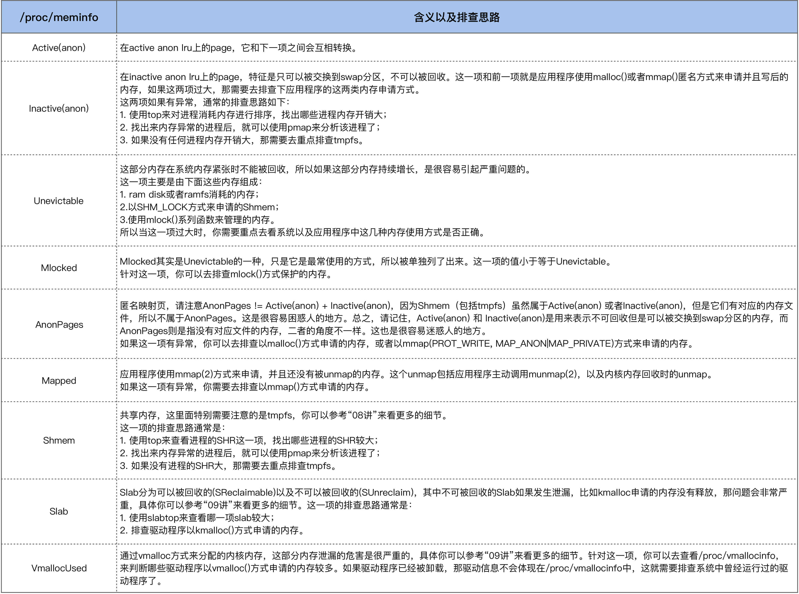

- 00 开篇词 如何让Linux内核更好地服务应用程序？.md.html
- 01 基础篇 如何用数据观测Page Cache？.md.html
- 02 基础篇 Page Cache是怎样产生和释放的？.md.html
- 03 案例篇 如何处理Page Cache难以回收产生的load飙高问题？.md.html
- 04 案例篇 如何处理Page Cache容易回收引起的业务性能问题？.md.html
- 05 分析篇 如何判断问题是否由Page Cache产生的？.md.html
- 06 基础篇 进程的哪些内存类型容易引起内存泄漏？.md.html
- 07 案例篇 如何预防内存泄漏导致的系统假死？.md.html
- 08 案例篇 Shmem：进程没有消耗内存，内存哪去了？.md.html
- 09 分析篇 如何对内核内存泄漏做些基础的分析？.md.html
- 10 分析篇 内存泄漏时，我们该如何一步步找到根因？.md.html
- 11 基础篇 TCP连接的建立和断开受哪些系统配置影响？.md.html
- 12 基础篇 TCP收发包过程会受哪些配置项影响？.md.html
- 13 案例篇 TCP拥塞控制是如何导致业务性能抖动的？.md.html
- 14 案例篇 TCP端到端时延变大，怎样判断是哪里出现了问题？.md.html
- 15 分析篇 如何高效地分析TCP重传问题？.md.html
- 16 套路篇 如何分析常见的TCP问题？.md.html
- 17 基础篇 CPU是如何执行任务的？.md.html
- 18 案例篇 业务是否需要使用透明大页：水可载舟，亦可覆舟？.md.html
- 19 案例篇 网络吞吐高的业务是否需要开启网卡特性呢？.md.html
- 20 分析篇 如何分析CPU利用率飙高问题 ？.md.html
- 加餐 我是如何使用tracepoint来分析内核Bug的？.md.html
- 结束语 第一次看内核代码，我也很懵逼.md.html
- 捐赠
10 分析篇 内存泄漏时，我们该如何一步步找到根因？
你好，我是邵亚方。
通过我们前面的基础篇以及案例篇的学习，你对内存泄漏应该有了自己的一些理解。这节课我来跟你聊一聊系统性地分析内存泄漏问题的方法：也就是说，在面对内存泄漏时，我们该如何一步步去找到根因？
不过，我不会深入到具体语言的实现细节，以及具体业务的代码逻辑中，而是会从Linux系统上通用的一些分析方法来入手。这样，不论你使用什么开发语言，不论你在开发什么，它总能给你提供一些帮助。
如何定位出是谁在消耗内存 ？
内存泄漏的外在表现通常是系统内存不够，严重的话可能会引起OOM (Out of Memory)，甚至系统宕机。那在发生这些现象时，惯用的分析套路是什么呢？
首先，我们需要去找出到底是谁在消耗内存，/proc/meminfo可以帮助我们来快速定位出问题所在。
/proc/meminfo中的项目很多，我们没必要全部都背下来，不过有些项是相对容易出问题的，也是你在遇到内存相关的问题时，需要重点去排查的。我将这些项列了一张表格，也给出了每一项有异常时的排查思路。

总之，如果进程的内存有问题，那使用top就可以观察出来；如果进程的内存没有问题，那你可以从/proc/meminfo入手来一步步地去深入分析。
接下来，我们分析一个实际的案例，来看看如何分析进程内存泄漏是什么原因导致的。
如何去分析进程的内存泄漏原因？
这是我多年以前帮助一个小伙伴分析的内存泄漏问题。这个小伙伴已经使用top排查出了业务进程的内存异常，但是不清楚该如何去进一步分析。
他遇到的这个异常是，业务进程的虚拟地址空间（VIRT）被消耗很大，但是物理内存（RES）使用得却很少，所以他怀疑是进程的虚拟地址空间有内存泄漏。
我们在“06讲”中也讲过，出现该现象时，可以用top命令观察（这是当时保存的生产环境信息，部分信息做了脱敏处理）：
PID USER PR NI VIRT RES SHR S %CPU %MEM TIME+ COMMAND
31108 app 20 0 285g 4.0g 19m S 60.6 12.7 10986:15 app_server
可以看到app_server这个程序的虚拟地址空间（VIRT这一项）很大，有285GB。
那该如何追踪app_server究竟是哪里存在问题呢？
我们可以用pidstat命令（关于该命令，你可以man pidstat）来追踪下该进程的内存行为，看看能够发现什么现象。
$ pidstat -r -p 31108 1
04:47:00 PM 31108 353.00 0.00 299029776 4182152 12.73 app_server
...
04:47:59 PM 31108 149.00 0.00 299029776 4181052 12.73 app_server
04:48:00 PM 31108 191.00 0.00 299040020 4181188 12.73 app_server
...
04:48:59 PM 31108 179.00 0.00 299040020 4181400 12.73 app_server
04:49:00 PM 31108 183.00 0.00 299050264 4181524 12.73 app_server
...
04:49:59 PM 31108 157.00 0.00 299050264 4181456 12.73 app_server
04:50:00 PM 31108 207.00 0.00 299060508 4181560 12.73 app_server
...
04:50:59 PM 31108 127.00 0.00 299060508 4180816 12.73 app_server
04:51:00 PM 31108 172.00 0.00 299070752 4180956 12.73 app_server
如上所示，在每个整分钟的时候，VSZ会增大10244KB，这看起来是一个很有规律的现象。然后，我们再来看下增大的这个内存区域到底是什么，你可以通过/proc/PID/smaps来看（关于/proc提供的信息，你可以回顾我们课程的“05讲”）：
增大的内存区域，具体如下：
$ cat /proc/31108/smaps
...
7faae0e49000-7faae1849000 rw-p 00000000 00:00 0
Size: 10240 kB
Rss: 80 kB
Pss: 80 kB
Shared_Clean: 0 kB
Shared_Dirty: 0 kB
Private_Clean: 0 kB
Private_Dirty: 80 kB
Referenced: 60 kB
Anonymous: 80 kB
AnonHugePages: 0 kB
Swap: 0 kB
KernelPageSize: 4 kB
MMUPageSize: 4 kB
7faae1849000-7faae184a000 ---p 00000000 00:00 0
Size: 4 kB
Rss: 0 kB
Pss: 0 kB
Shared_Clean: 0 kB
Shared_Dirty: 0 kB
Private_Clean: 0 kB
Private_Dirty: 0 kB
Referenced: 0 kB
Anonymous: 0 kB
AnonHugePages: 0 kB
Swap: 0 kB
KernelPageSize: 4 kB
MMUPageSize: 4 kB
可以看到，它包括：一个私有地址空间，这从rw-p这个属性中的private可以看出来；以及一个保护页 ，这从—p这个属性可以看出来，即进程无法访问。对于有经验的开发者而言，从这个4K的保护页就可以猜测出应该跟线程栈有关了。
然后我们跟踪下进程申请这部分地址空间的目的是什么，通过strace命令来跟踪系统调用就可以了。因为VIRT的增加，它的系统调用函数无非是mmap或者brk，那么我们只需要strace的结果来看下mmap或brk就可以了。
用strace跟踪如下：
$ strace -t -f -p 31108 -o 31108.strace
线程数较多，如果使用-f来跟踪线程，跟踪的信息量也很大，逐个搜索日志里面的mmap或者brk真是眼花缭乱， 所以我们来grep一下这个大小(10489856即10244KB)，然后过滤下就好了：
$ cat 31108.strace | grep 10489856
31152 23:00:00 mmap(NULL, 10489856, PROT_READ|PROT_WRITE, MAP_PRIVATE|MAP_ANONYMOUS|MAP_STACK, -1, 0 <unfinished ...>
31151 23:01:00 mmap(NULL, 10489856, PROT_READ|PROT_WRITE, MAP_PRIVATE|MAP_ANONYMOUS|MAP_STACK, -1, 0 <unfinished ...>
31157 23:02:00 mmap(NULL, 10489856, PROT_READ|PROT_WRITE, MAP_PRIVATE|MAP_ANONYMOUS|MAP_STACK, -1, 0 <unfinished ...>
31158 23:03:00 mmap(NULL, 10489856, PROT_READ|PROT_WRITE, MAP_PRIVATE|MAP_ANONYMOUS|MAP_STACK, -1, 0 <unfinished ...>
31165 23:04:00 mmap(NULL, 10489856, PROT_READ|PROT_WRITE, MAP_PRIVATE|MAP_ANONYMOUS|MAP_STACK, -1, 0 <unfinished ...>
31163 23:05:00 mmap(NULL, 10489856, PROT_READ|PROT_WRITE, MAP_PRIVATE|MAP_ANONYMOUS|MAP_STACK, -1, 0 <unfinished ...>
31153 23:06:00 mmap(NULL, 10489856, PROT_READ|PROT_WRITE, MAP_PRIVATE|MAP_ANONYMOUS|MAP_STACK, -1, 0 <unfinished ...>
31155 23:07:00 mmap(NULL, 10489856, PROT_READ|PROT_WRITE, MAP_PRIVATE|MAP_ANONYMOUS|MAP_STACK, -1, 0 <unfinished ...>
31149 23:08:00 mmap(NULL, 10489856, PROT_READ|PROT_WRITE, MAP_PRIVATE|MAP_ANONYMOUS|MAP_STACK, -1, 0 <unfinished ...>
31147 23:09:00 mmap(NULL, 10489856, PROT_READ|PROT_WRITE, MAP_PRIVATE|MAP_ANONYMOUS|MAP_STACK, -1, 0 <unfinished ...>
31159 23:10:00 mmap(NULL, 10489856, PROT_READ|PROT_WRITE, MAP_PRIVATE|MAP_ANONYMOUS|MAP_STACK, -1, 0 <unfinished ...>
31157 23:11:00 mmap(NULL, 10489856, PROT_READ|PROT_WRITE, MAP_PRIVATE|MAP_ANONYMOUS|MAP_STACK, -1, 0 <unfinished ...>
31148 23:12:00 mmap(NULL, 10489856, PROT_READ|PROT_WRITE, MAP_PRIVATE|MAP_ANONYMOUS|MAP_STACK, -1, 0 <unfinished ...>
31150 23:13:00 mmap(NULL, 10489856, PROT_READ|PROT_WRITE, MAP_PRIVATE|MAP_ANONYMOUS|MAP_STACK, -1, 0 <unfinished ...>
31173 23:14:00 mmap(NULL, 10489856, PROT_READ|PROT_WRITE, MAP_PRIVATE|MAP_ANONYMOUS|MAP_STACK, -1, 0 <unfinished ...>
从这个日志我们可以看到，出错的是mmap()这个系统调用，那我们再来看下mmap这个内存的目的：
31151 23:01:00 mmap(NULL, 10489856, PROT_READ|PROT_WRITE, MAP_PRIVATE|MAP_ANONYMOUS|MAP_STACK, -1, 0 <unfinished ...>
31151 23:01:00 mprotect(0x7fa94bbc0000, 4096, PROT_NONE <unfinished ...> <<< 创建一个保护页
31151 23:01:00 clone( <unfinished ...> <<< 创建线程
31151 23:01:00 <... clone resumed> child_stack=0x7fa94c5afe50, flags=CLONE_VM|CLONE_FS|CLONE_FILES|CLONE_SIGHAND
|CLONE_THREAD|CLONE_SYSVSEM|CLONE_SETTLS|CLONE_PARENT_SETTID
|CLONE_CHILD_CLEARTID, parent_tidptr=0x7fa94c5c09d0, tls=0x7fa94c5c0700, child_tidptr=0x7fa94c5c09d0) = 20610
可以看出，这是在clone时申请的线程栈。到这里你可能会有一个疑问：既然线程栈消耗了这么多的内存，那理应有很多才对啊？
但是实际上，系统中并没有很多app_server的线程，那这是为什么呢？答案其实比较简单：线程短暂执行完毕后就退出了，可是mmap的线程栈却没有被释放。
我们来写一个简单的程序复现这个现象，问题的复现是很重要的，如果很复杂的问题可以用简单的程序来复现，那就是最好的结果了。
如下是一个简单的复现程序：mmap一个40K的线程栈，然后线程简单执行一下就退出。
#include <stdio.h>
#include <unistd.h>
#include <sys/mman.h>
#include <sys/types.h>
#include <sys/wait.h>
#define _SCHED_H
#define __USE_GNU
#include <bits/sched.h>
#define STACK_SIZE 40960
int func(void *arg)
{
printf("thread enter.\n");
sleep(1);
printf("thread exit.\n");
return 0;
}
int main()
{
int thread_pid;
int status;
int w;
while (1) {
void *addr = mmap(NULL, STACK_SIZE, PROT_READ|PROT_WRITE, MAP_PRIVATE|MAP_ANONYMOUS|MAP_STACK, -1, 0);
if (addr == NULL) {
perror("mmap");
goto error;
}
printf("creat new thread...\n");
thread_pid = clone(&func, addr + STACK_SIZE, CLONE_SIGHAND|CLONE_FS|CLONE_VM|CLONE_FILES, NULL);
printf("Done! Thread pid: %d\n", thread_pid);
if (thread_pid != -1) {
do {
w = waitpid(-1, NULL, __WCLONE | __WALL);
if (w == -1) {
perror("waitpid");
goto error;
}
} while (!WIFEXITED(status) && !WIFSIGNALED(status));
}
sleep(10);
}
error:
return 0;
}
然后我们用pidstat观察该进程的执行，可以发现它的现象跟生产环境中的问题是一致的：
$ pidstat -r -p 535 5
11:56:51 PM UID PID minflt/s majflt/s VSZ RSS %MEM Command
11:56:56 PM 0 535 0.20 0.00 4364 360 0.00 a.out
11:57:01 PM 0 535 0.00 0.00 4364 360 0.00 a.out
11:57:06 PM 0 535 0.20 0.00 4404 360 0.00 a.out
11:57:11 PM 0 535 0.00 0.00 4404 360 0.00 a.out
11:57:16 PM 0 535 0.20 0.00 4444 360 0.00 a.out
11:57:21 PM 0 535 0.00 0.00 4444 360 0.00 a.out
11:57:26 PM 0 535 0.20 0.00 4484 360 0.00 a.out
11:57:31 PM 0 535 0.00 0.00 4484 360 0.00 a.out
11:57:36 PM 0 535 0.20 0.00 4524 360 0.00 a.out
^C
Average: 0 535 0.11 0.00 4435 360 0.00 a.out
你可以看到，VSZ每10s增大40K，但是增加的那个线程只存在了1s就消失了。
至此我们就可以推断出app_server的代码哪里有问题了，然后小伙伴去修复该代码Bug，很快就把该问题给解决了。
当然了，应用程序的内存泄漏问题其实是千奇百怪的，分析方法也不尽相同，我们讲述这个案例的目的是为了告诉你一些通用的分析技巧。我们掌握了这些通用分析技巧，很多时候就可以以不变来应万变了。
课堂总结
这节课我们讲述了系统性分析Linux上内存泄漏问题的分析方法，要点如下：
- top工具和/proc/meminfo文件是分析Linux上内存泄漏问题，甚至是所有内存问题的第一步，我们先找出来哪个进程或者哪一项有异常，然后再针对性地分析；
- 应用程序的内存泄漏千奇百怪，所以你需要掌握一些通用的分析技巧，掌握了这些技巧很多时候就可以以不变应万变。但是，这些技巧的掌握，是建立在你的基础知识足够扎实的基础上。你需要熟练掌握我们这个系列课程讲述的这些基础知识，熟才能生巧。
课后作业
请写一个内存泄漏的程序，然后观察/proc/[pid]/maps以及smaps的变化（pid即内存泄漏的程序的pid）。欢迎你在留言区与我讨论。
感谢你的阅读，如果你认为这节课的内容有收获，也欢迎把它分享给你的朋友，我们下一讲见。
© 2019 - 2023 Liangliang Lee. Powered by gin and hexo-theme-book.